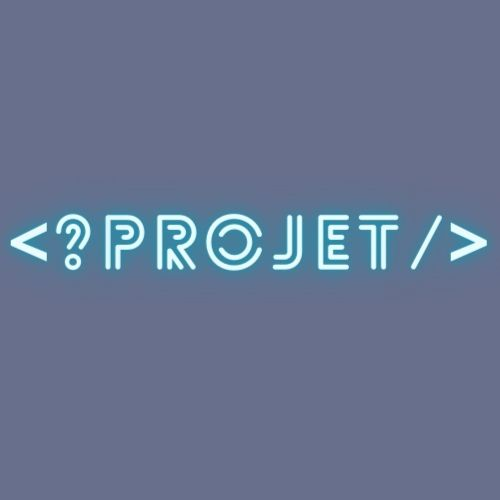

Bienvenue sur mon site web.
Je vais vous présenter sur ce site mes différents projets ainsi que mes différentes activités liées à l'informatique.
Pour commencer parlons brièvement de moi.

Je m'appelle Yugortha et je suis étudiant à l'université de Grenoble à la faculté de Droit. Ayant une passion pour l'informatique,
j'ai décidé, pour la rentrée 2024 de postuler à une formation en informatique, pour m'orienter
en cybersécurité. Le domaine dans lequel je souhaite travailler plus tard.
Comme vous l'avez sans doute remarqué, j'ai un parcours assez atypique, après mon baccalauréat STI2D option SIN,
j'ai décidé de partir en licence de physique puis physique recherche. Pour enfin partir en Droit. Cette orientation en droit,
avait déjà pour objectif de me faire évoluer dans le domaine de la cybersécurité, mais après mainte réfléxion, le côté technique m'attire davantage que le côté juridique.
Ainsi, j'ai décidé de m'inscrire sur parcoursup et de saisir ma chance et de me réorienter une dernière fois.
Comme vous allez le voir, je passe une partie de mon temps à essayer de mettre en oeuvre différent projet. Egalement, j'apprends en autodidcate
les différentes notions en informatique tel que les réseaux (protocole (HTTP,TCP/IP,FTP, etc...), couche réseau, routeur etc...) ainsi que différent langage
comme HTML, CSS ainsi qu'un peu de JAVASCRIPT pour ce qui est du développement web. Il y a également PYTHON avec lequel j'ai manipulé de nombreuses fois. Mais également d'autres langages en cours d'apprentissage comme :
le C, PHP, prochainement SQL et l'assembleur. Concernant les langages systèmes, j'apprends Linux et je l'espère Linux Bash ainsi que PowerShell, ce qui me permettra de travailler sur différents OS.
Mon envie de faire de l'informatique se traduit tout d'abord par une très grande curiosité vis à vis du fonctionnement des composents numériques. Cela s'est transformé en une envie d'apprendre
davantage dans ce domaine, ainsi, je me suis conforté aux notions de programmations qui m'ont ouvert la porte vers un univers dans lequel je ne cesse d'apprendre.
Au fur et à mesure de mes études, cette passion s'est dirigé vers la cybersécurité, ce domaine qui m'a toujours attiré et a suscité en moi une véritable passion.
Je pratique de manière régulière des challenges en ligne, comme par exemple dans les sites Root-Me, Portswigger, Cyber-Learning, pour en apprendre plus.
Egalement, j'essaye de faire de petits outils qui me serve à faciliter ces challenges dont un que vous pouvez voir sur ce site (que je m'améliore petit à petit).